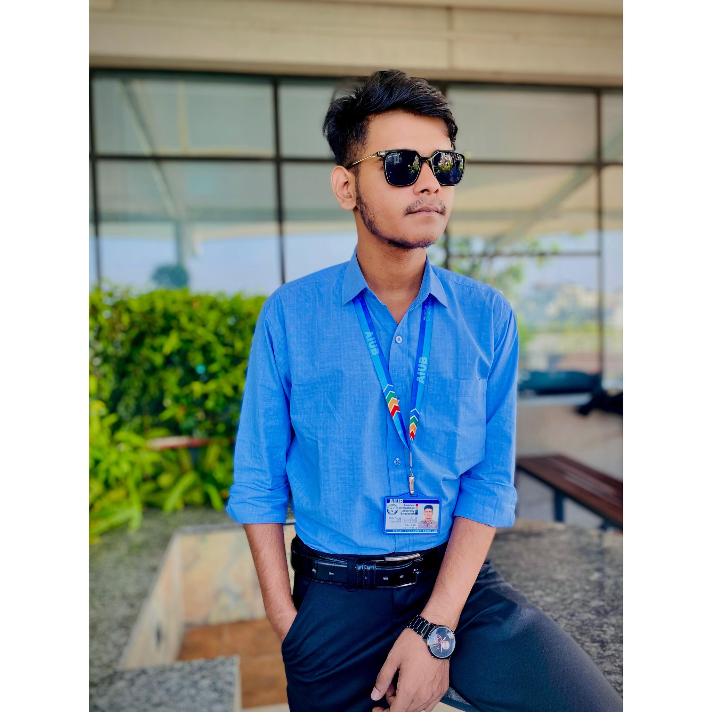

Student of BSC. in Cse at American International University-Bangladesh
I am Khondaker Abdullah Nishat, currently in my 9th semester of BSc in Computer Science & Engineering at AIUB. I have a strong passion for software engineering and enjoy learning new technologies, especially .NET languages (I have already learned C#). My programming skills include Python, C++, and Java, and I am eager to gain more hands-on experience in the field.
I was born on December 25, 2002, in Kashil, Basail, Tangail, Dhaka, Bangladesh. Later, I moved to Tangail city, where I completed my Primary School Certificate (PSC) at Rafiq Raju Cadet Academy. After that, I studied at Shaheed Cadet Academy in Sabalia, Tangail, for class six. From 2017 to 2019, I attended Sristy Academic School in Supari Bagan, Tangail, where I completed my SSC. For higher secondary education, I shifted to Uttara, Dhaka, and completed my HSC from Milestone College in 2021. Later, I got admitted to American International University-Bangladesh (AIUB) to pursue a BSc in CSE.
For my details educational qualification click here!
Apart from academics, I have a keen interest in learning new programming languages and software development. In my free time, I love playing battle royale games, reading storybooks, and watching movies. I am also passionate about riding motorcycles, which gives me a sense of freedom and adventure.
Are you looking for a skilled and passionate web designer, web developer, programmer, or graphic designer? Look no further! With a strong foundation in front-end and back-end development, graphic design, and programming languages such as Python, C++, Java, and C#, I am ready to bring your ideas to life.
Whether you need an eye-catching, responsive website, a custom-built web application, or innovative graphic design work, I am eager to collaborate with you and deliver high-quality solutions that meet your needs.
Let’s create something amazing together! Mail me
Click On Next Page button to see my html form!